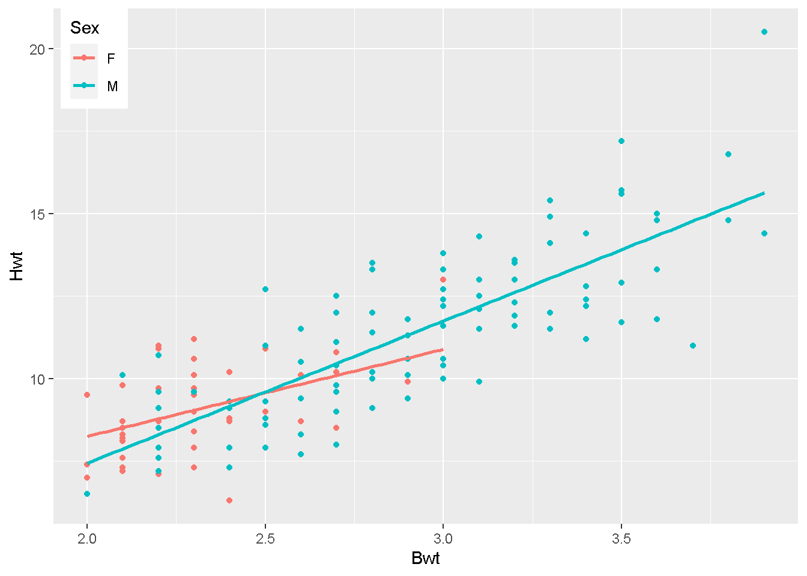
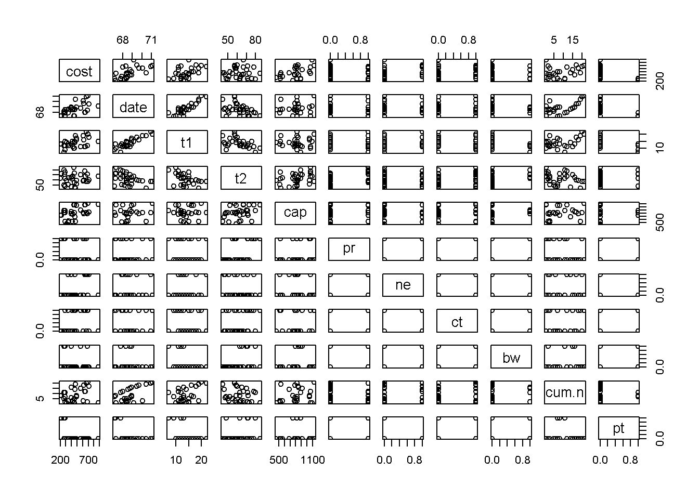

In the MASS package, you’ll find the data frame cats, which provides data on sex, body weight (in kilograms), and heart weight (in grams) for 144 household cats (see Venables and Ripley, 2002, for further details); you can read the documentation with a call to ?cats. Load the MASS package with a call to library(“MASS”), and access the object directly by entering cats at the console prompt.
data("cats")
cats %>%
ggplot()+
aes(x=Bwt,y=Hwt,col=Sex)+
geom_point()+
theme(
legend.position = c(0.01,1),
legend.justification = c("left", "top"),
legend.box.just = "right",
legend.margin = margin(6, 6, 6, 6)
)model1 <- lm(Hwt ~ Bwt + Sex, data = cats)
summary(model1)##
## Call:
## lm(formula = Hwt ~ Bwt + Sex, data = cats)
##
## Residuals:
## Min 1Q Median 3Q Max
## -3.5833 -0.9700 -0.0948 1.0432 5.1016
##
## Coefficients:
## Estimate Std. Error t value Pr(>|t|)
## (Intercept) -0.4149 0.7273 -0.571 0.569
## Bwt 4.0758 0.2948 13.826 <2e-16 ***
## SexM -0.0821 0.3040 -0.270 0.788
## ---
## Signif. codes: 0 '***' 0.001 '**' 0.01 '*' 0.05 '.' 0.1 ' ' 1
##
## Residual standard error: 1.457 on 141 degrees of freedom
## Multiple R-squared: 0.6468, Adjusted R-squared: 0.6418
## F-statistic: 129.1 on 2 and 141 DF, p-value: < 2.2e-16the Equation is: y = -0.4149 + 4.0758Bwt - 0.0821SexM
Ans:From the summary table , we can see that p value of Bwt is less then 0.05 which means the variable is significant for the model where as the sex variable have p value more then 0.05, so the variable is insignificant for the model
Ans:The coefficient of determination is 0.6468. It means that 65% of the variation of the Hwt can be explained by the model.even if it includes a not statistical relevant predictor variable in the model.
newdata = data.frame(Bwt = (3.4), Sex = ("F"))
predict(model1,
newdata,
interval = "prediction")## fit lwr upr
## 1 13.44266 10.46904 16.41628cats %>%
ggplot()+
aes(x=Bwt,y=Hwt,col=Sex)+
geom_point()+
theme(
legend.position = c(0.01,1),
legend.justification = c("left", "top"),
legend.box.just = "right",
legend.margin = margin(6, 6, 6, 6)
) +
geom_smooth(method = "lm",aes(col=Sex),se=0)
The boot package (Davison and Hinkley, 1997; Canty and Ripley, 2015) is another library of R code that’s included with the standard installation but isn’t automatically loaded. Load boot with a call to library(“boot”). You’ll find a data frame called nuclear, which contains data on the construction of nuclear power plants in the United States in the late 1960s (Cox and Snell, 1981). e. Access the documentation by entering ?nuclear at the prompt and examine the details of the variables. (Note there is a mistake for date, which provides the date that the construction permits were issued—it should read “measured in years since January 1 1900 to the nearest month.”) Use pairs to produce a quick scatterplot matrix of the data.
library(boot)
data("nuclear")
pairs(nuclear)
model2 <- lm(cost ~ t1 + t2, data = nuclear)
summary(model2)##
## Call:
## lm(formula = cost ~ t1 + t2, data = nuclear)
##
## Residuals:
## Min 1Q Median 3Q Max
## -273.17 -73.42 -13.40 69.31 360.61
##
## Coefficients:
## Estimate Std. Error t value Pr(>|t|)
## (Intercept) -242.146 268.020 -0.903 0.37373
## t1 29.908 9.086 3.292 0.00262 **
## t2 4.689 2.945 1.592 0.12224
## ---
## Signif. codes: 0 '***' 0.001 '**' 0.01 '*' 0.05 '.' 0.1 ' ' 1
##
## Residual standard error: 150.1 on 29 degrees of freedom
## Multiple R-squared: 0.272, Adjusted R-squared: 0.2218
## F-statistic: 5.418 on 2 and 29 DF, p-value: 0.01001model3 <- lm(cost ~ t1 + t2 + date, data = nuclear)
summary(model3)##
## Call:
## lm(formula = cost ~ t1 + t2 + date, data = nuclear)
##
## Residuals:
## Min 1Q Median 3Q Max
## -208.63 -90.74 -12.07 59.78 324.19
##
## Coefficients:
## Estimate Std. Error t value Pr(>|t|)
## (Intercept) -9232.833 2974.432 -3.104 0.00434 **
## t1 -5.918 14.281 -0.414 0.68176
## t2 4.639 2.601 1.784 0.08535 .
## date 138.324 45.617 3.032 0.00519 **
## ---
## Signif. codes: 0 '***' 0.001 '**' 0.01 '*' 0.05 '.' 0.1 ' ' 1
##
## Residual standard error: 132.5 on 28 degrees of freedom
## Multiple R-squared: 0.452, Adjusted R-squared: 0.3933
## F-statistic: 7.698 on 3 and 28 DF, p-value: 0.000667model4 <- lm(cost ~ date + cap + ne, data = nuclear)
summary(model4)##
## Call:
## lm(formula = cost ~ date + cap + ne, data = nuclear)
##
## Residuals:
## Min 1Q Median 3Q Max
## -154.966 -68.202 -3.614 45.919 285.014
##
## Coefficients:
## Estimate Std. Error t value Pr(>|t|)
## (Intercept) -6.458e+03 1.216e+03 -5.310 1.19e-05 ***
## date 9.544e+01 1.773e+01 5.382 9.77e-06 ***
## cap 4.157e-01 9.463e-02 4.393 0.000145 ***
## ne 1.261e+02 4.092e+01 3.083 0.004575 **
## ---
## Signif. codes: 0 '***' 0.001 '**' 0.01 '*' 0.05 '.' 0.1 ' ' 1
##
## Residual standard error: 99.74 on 28 degrees of freedom
## Multiple R-squared: 0.6895, Adjusted R-squared: 0.6562
## F-statistic: 20.73 on 3 and 28 DF, p-value: 2.827e-07#Equation is: -6458.3889006 +95.4385587*date + 0.4157157*cap + 126.1287688*ne
confint(model4)## 2.5 % 97.5 %
## (Intercept) -8949.8032112 -3966.9745900
## date 59.1134640 131.7636535
## cap 0.2218791 0.6095524
## ne 42.3145363 209.9430014The following table gives an excerpt of a historical data set compiled between 1961 and 1973. It concerns the annual murder rate in Detroit, Michigan; the data were originally presented and analyzed by Fisher (1976) and are reproduced here from Harraway (1995). In the data set you’ll find the number of murders, police officers, and gun licenses issued per 100,000 population, as well as the overall unemployment rate as a percentage of the overall population.
| Murders | Police | Unemployment | Guns |
|---|---|---|---|
| 8.60 | 260.35 | 11.0 | 178.15 |
| 8.90 | 269.80 | 7.0 | 156.41 |
| 8.52 | 272.04 | 5.2 | 198.02 |
| 8.89 | 272.96 | 4.3 | 222.10 |
| 13.07 | 272.51 | 3.5 | 301.92 |
| 14.57 | 261.26 | 3.2 | 391.22 |
| 21.36 | 268.89 | 4.1 | 665.56 |
| 28.03 | 295.99 | 3.9 | 1131.21 |
| 31.49 | 319.87 | 3.6 | 837.60 |
| 37.39 | 341.43 | 7.1 | 794.90 |
| 46.26 | 356.59 | 8.4 | 817.74 |
| 47.24 | 376.69 | 7.7 | 583.17 |
| 52.33 | 390.19 | 6.3 | 709.59 |
pairs(security)model5<-lm(Murders~Police+Unemployment+Guns,data=security)
summary(model5)##
## Call:
## lm(formula = Murders ~ Police + Unemployment + Guns, data = security)
##
## Residuals:
## Min 1Q Median 3Q Max
## -2.8453 -1.9445 0.2011 0.9195 4.6652
##
## Coefficients:
## Estimate Std. Error t value Pr(>|t|)
## (Intercept) -68.835174 5.868731 -11.729 9.35e-07 ***
## Police 0.280761 0.024686 11.373 1.21e-06 ***
## Unemployment 0.146590 0.408762 0.359 0.7281
## Guns 0.014176 0.003542 4.002 0.0031 **
## ---
## Signif. codes: 0 '***' 0.001 '**' 0.01 '*' 0.05 '.' 0.1 ' ' 1
##
## Residual standard error: 2.893 on 9 degrees of freedom
## Multiple R-squared: 0.9766, Adjusted R-squared: 0.9688
## F-statistic: 125.3 on 3 and 9 DF, p-value: 1.171e-07#It is not reasonable to state that all relationshipps between response and
#predictors are casual. We can see that Guns also presents a strong statistical
# evidence of relationship with murders.model<-lm(Murders~Police+Guns,data=security)
summary(model)##
## Call:
## lm(formula = Murders ~ Police + Guns, data = security)
##
## Residuals:
## Min 1Q Median 3Q Max
## -2.9453 -2.1083 0.2744 0.9578 4.6368
##
## Coefficients:
## Estimate Std. Error t value Pr(>|t|)
## (Intercept) -68.985033 5.592973 -12.334 2.26e-07 ***
## Police 0.284992 0.020717 13.756 8.01e-08 ***
## Guns 0.013638 0.003065 4.449 0.00124 **
## ---
## Signif. codes: 0 '***' 0.001 '**' 0.01 '*' 0.05 '.' 0.1 ' ' 1
##
## Residual standard error: 2.764 on 10 degrees of freedom
## Multiple R-squared: 0.9763, Adjusted R-squared: 0.9715
## F-statistic: 205.8 on 2 and 10 DF, p-value: 7.501e-09#Removing the unemployment predictor variable there is a much better statistical
#relation between the predictors and the answer. But hte model keeps having a
#great prediction capability.newdata = data.frame(Police = 300, Guns = c(500, 0))
predict.lm(
model,
newdata = newdata,
interval = "confidence",
level = 0.99
)## fit lwr upr
## 1 23.33141 20.88171 25.78112
## 2 16.51253 10.89978 22.12529The following table presents data collected in one of Galileo’s famous “ball” experiments, in which he rolled a ball down a ramp of different heights and measured how far it traveled from the base of the ramp. For more on this and other interesting examples, look at “Teaching Statistics with Data of Historic Significance” by Dickey and Arnold (1995).
Galileu<-data.frame(Iniheight=c(1000,800,600,450,300,200,100),
Dist=c(573,534,495,451,395,337,257))
kableExtra::kable(Galileu)| Iniheight | Dist |
|---|---|
| 1000 | 573 |
| 800 | 534 |
| 600 | 495 |
| 450 | 451 |
| 300 | 395 |
| 200 | 337 |
| 100 | 257 |
Galileu %>%
ggplot()+
aes(x=Dist,y=Iniheight)+
geom_point()+
ggtitle("Distance Traveled Vs. Initial Height")+
xlab("Initial Height")+
ylab("Distance")m.2<-lm(Dist~Iniheight+I(Iniheight^2),data=Galileu)
summary(m.2)##
## Call:
## lm(formula = Dist ~ Iniheight + I(Iniheight^2), data = Galileu)
##
## Residuals:
## 1 2 3 4 5 6 7
## 8.011 -12.130 -5.573 2.115 12.821 7.634 -12.878
##
## Coefficients:
## Estimate Std. Error t value Pr(>|t|)
## (Intercept) 2.037e+02 1.549e+01 13.154 0.000193 ***
## Iniheight 6.950e-01 6.914e-02 10.052 0.000551 ***
## I(Iniheight^2) -3.337e-04 6.171e-05 -5.408 0.005662 **
## ---
## Signif. codes: 0 '***' 0.001 '**' 0.01 '*' 0.05 '.' 0.1 ' ' 1
##
## Residual standard error: 12.6 on 4 degrees of freedom
## Multiple R-squared: 0.9916, Adjusted R-squared: 0.9874
## F-statistic: 235.9 on 2 and 4 DF, p-value: 7.065e-05m.3<-lm(Dist~Iniheight+I(Iniheight^2)+I(Iniheight^3),data=Galileu)
summary(m.3)##
## Call:
## lm(formula = Dist ~ Iniheight + I(Iniheight^2) + I(Iniheight^3),
## data = Galileu)
##
## Residuals:
## 1 2 3 4 5 6 7
## -0.6526 1.7768 0.1060 -3.8552 1.9856 2.4273 -1.7880
##
## Coefficients:
## Estimate Std. Error t value Pr(>|t|)
## (Intercept) 1.626e+02 6.726e+00 24.176 0.000155 ***
## Iniheight 1.074e+00 5.305e-02 20.248 0.000263 ***
## I(Iniheight^2) -1.173e-03 1.118e-04 -10.493 0.001848 **
## I(Iniheight^3) 5.102e-07 6.727e-08 7.585 0.004754 **
## ---
## Signif. codes: 0 '***' 0.001 '**' 0.01 '*' 0.05 '.' 0.1 ' ' 1
##
## Residual standard error: 3.24 on 3 degrees of freedom
## Multiple R-squared: 0.9996, Adjusted R-squared: 0.9992
## F-statistic: 2400 on 3 and 3 DF, p-value: 1.443e-05m.4<-lm(Dist~Iniheight+I(Iniheight^2)+I(Iniheight^3)+I(Iniheight^4),
data=Galileu)
summary(m.4)##
## Call:
## lm(formula = Dist ~ Iniheight + I(Iniheight^2) + I(Iniheight^3) +
## I(Iniheight^4), data = Galileu)
##
## Residuals:
## 1 2 3 4 5 6 7
## 0.1361 -0.7553 1.9752 -2.1722 0.7122 0.3645 -0.2604
##
## Coefficients:
## Estimate Std. Error t value Pr(>|t|)
## (Intercept) 1.490e+02 8.001e+00 18.619 0.00287 **
## Iniheight 1.254e+00 9.361e-02 13.395 0.00553 **
## I(Iniheight^2) -1.853e-03 3.347e-04 -5.535 0.03112 *
## I(Iniheight^3) 1.460e-06 4.577e-07 3.190 0.08581 .
## I(Iniheight^4) -4.372e-10 2.096e-10 -2.086 0.17232
## ---
## Signif. codes: 0 '***' 0.001 '**' 0.01 '*' 0.05 '.' 0.1 ' ' 1
##
## Residual standard error: 2.227 on 2 degrees of freedom
## Multiple R-squared: 0.9999, Adjusted R-squared: 0.9996
## F-statistic: 3811 on 4 and 2 DF, p-value: 0.0002624#Increasing the number of powers in the linear regression, we see that we have
#an improovment in the prediction model, The model get to answer 99.99% of the
#response variable. altough, the new variables tend to loose statistical
#relevance. For that, we would use the galfit.3Galileu %>%
ggplot()+
aes(x=Dist,y=Iniheight)+
geom_point()+
ggtitle("Distance Traveled Vs. Initial Height")+
xlab("Initial Height")+
ylab("Distance") +
geom_smooth(method = "lm")